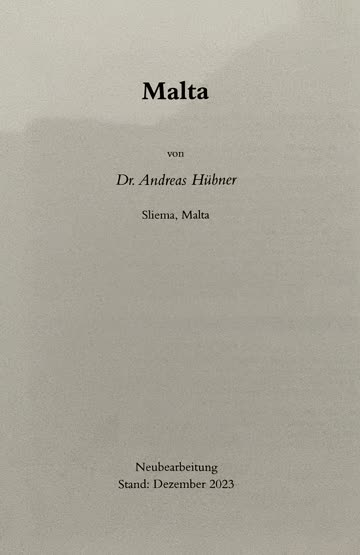
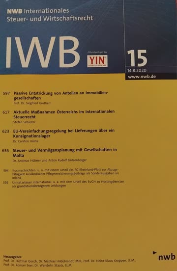
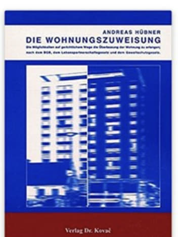
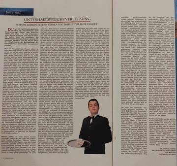
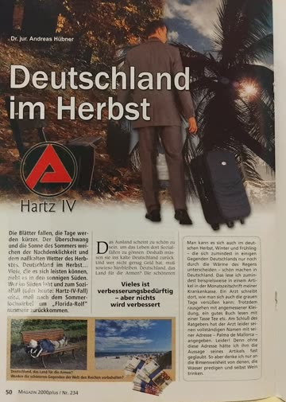
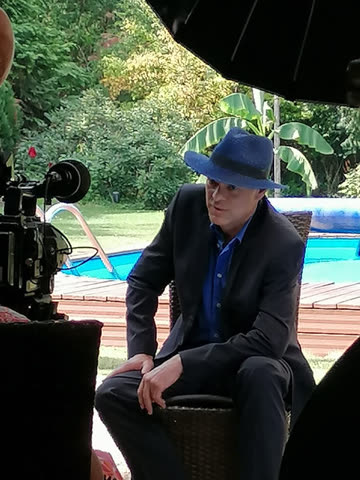

Archiv
Veröffentlichungen und Medienbeiträge
Seit 1995 veröffentliche ich regelmäßig zu Fragen des internationalen Gesellschafts- und Steuerrechts, des Familienrechts und des Glücksspielrechts — in juristischen Fachverlagen ebenso wie in der Publikumspresse. Hinzu kommen Beiträge als Experte in Fernsehformaten des Hessischen Rundfunks, der ARD und von ARTE. Die folgende Übersicht ist chronologisch nach Gattung geordnet.
Fachbeiträge und Bücher
Beiträge in juristischen Fachverlagen und Handbüchern.
-
2023

Länderbeitrag „Malta"
Darstellung des maltesischen Familienrechts für die deutsche Rechtspraxis — Eheschließung, Güterrecht, Scheidung, Unterhalt und elterliche Sorge. Neubearbeitung, Stand Dezember 2023.
In: Rieck / Lettmaier (Hrsg.), Ausländisches Familienrecht · C.H.BECK · 28. Auflage 2025 · ISBN 978-3-406-53140-8 -
2020

Steuer- und Vermögensplanung mit Gesellschaften in Malta
Gemeinsam mit Anton Rudolf Götzenberger. Überblick über Malta-Gesellschaften im Allgemeinen und die Malta Limited im Besonderen — Gründung, Besteuerung und Gestaltungsmöglichkeiten aus deutscher Sicht.
In: IWB — Internationales Steuer- und Wirtschaftsrecht · Ausgabe 15 vom 14.08.2020 · S. 636 · NWB Verlag -
2002

Die Wohnungszuweisung
Die Möglichkeiten, auf gerichtlichem Wege die Überlassung der Wohnung zu erlangen — nach dem BGB, dem Lebenspartnerschaftsgesetz und dem Gewaltschutzgesetz.
Reihe „Studien zur Rechtswissenschaft" · Verlag Dr. Kovač, Hamburg


Presse und Kolumnen
Beiträge für ein nichtjuristisches Publikum.
-
2010

Unterhaltspflichtverletzung — warum zahlen Eltern keinen Unterhalt für ihre Kinder?
Analyse der Ursachen ausbleibender Unterhaltszahlungen und ein Plädoyer dafür, Kindesunterhalt dem Kind selbst zuzuwenden statt dem betreuenden Elternteil — mit einem Ausblick auf das Wechselmodell als gesetzliches Regelmodell.
In: PAPA-YA — Das Magazin · Ausgabe 3/2010 -
2010
Gesetze auf dem Prüfstand (Teil 2)
Kolumne zum Gleichbehandlungsgebot des Art. 3 GG und zu der Frage, wie sich geschlechtsbezogene Sonderregelungen zu Art. 3 Abs. 3 GG und Art. 6 GG verhalten.
In: PAPA-YA — Das Magazin · Ausgabe 3/2010 · S. 22 -
2004

Deutschland im Herbst — Hartz IV
Zu den sozialrechtlichen Folgen der Hartz-IV-Reform für Leistungsbezieher mit Wohnsitz im Ausland — im Anschluss an die Debatte um den Fall „Florida-Rolf".
In: Magazin 2000plus · Nr. 234 · S. 50


Fernsehen und Rundfunk
Auftritte als juristischer Experte in Verbraucher- und Dokumentationsformaten.
-
ARTE

„Spiel ohne Grenzen"
Interview für die ARTE-Dokumentation zum europäischen Online-Glücksspielmarkt — abrufbar in der ARTE-Mediathek.
-
2004
mex — „Eigenheimabzocke"
Hessischer Rundfunk · 29.04.2004 -
2004
hessenschau — „Hausbesitz futsch"
Hessischer Rundfunk · 15.03.2004 -
2003
mex — „Sture Bahn"
Hessischer Rundfunk · 18.09.2003 -
2003
hessenschau — „Einbauküche / Neckermann"
Hessischer Rundfunk · 05.07.2003 -
2002
mex — „Kaffeefahrt"
Hessischer Rundfunk · 19.09.2002 -
2002
Plusminus — „Kaffeefahrt"
ARD · 09.07.2002 -
2002
mex — „Kaffeefahrt"
Hessischer Rundfunk · 19.06.2002

Einzelne Beiträge stelle ich Mandanten und Fachkollegen auf Anfrage gern zur Verfügung.